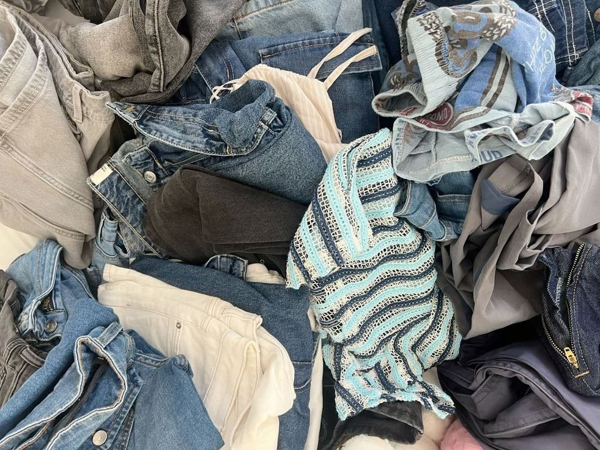

¿No sabés que ponerte?
En esta página podrás reversionar y utilizar tus mismas prendas de distintas maneras. También te enseñaremos como convertir una prenda básica en algo único con herramientas que tenés en casa!

En esta página podrás reversionar y utilizar tus mismas prendas de distintas maneras. También te enseñaremos como convertir una prenda básica en algo único con herramientas que tenés en casa!
Somos un emprendimiento que busca inspirar a las personas a aprovechar al máximo las prendas que ya tienen, dándoles nuevas oportunidades a través de la reutilización y la creatividad. Además, compartimos consejos y tips para transformar outfits básicos en looks únicos mediante el uso de accesorios. Queremos demostrar la importancia de combinar colores, texturas y estilos, y mostrar que no hace falta comprar ropa nueva para crear diferentes y originales conjuntos.
Damos consejos online por nuestra web. También una vez al año hacemos una feria donde confeccionamos y recibimos prendas únicas, reutilizadas para ustedes!